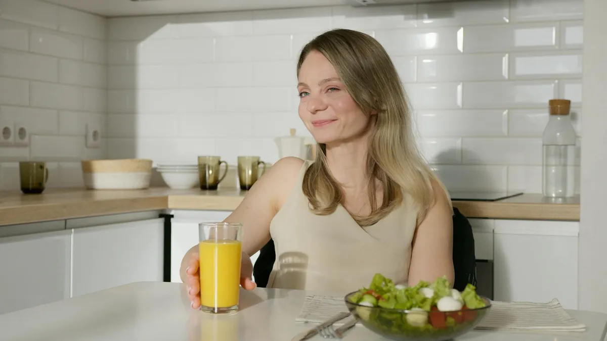

Unlock Your Health: The Surprising Benefits of Daily Hydration

Key takeaways
- I used to think drinking water was simple.
- Just grab a glass when you're thirsty, right?
- Track what feels sustainable and adjust gradually.
I used to think drinking water was simple. Just grab a glass when you're thirsty, right? Wrong. For years, I battled constant fatigue, dull skin, and that foggy brain feeling. I tried all sorts of supplements and fancy diets, but nothing really stuck. Then, I stumbled upon a simple truth: unlocking my health was deeply tied to something as basic as daily hydration. It sounds almost too easy, but the more I dug in, the more I realized how profoundly water impacts literally *everything*.
Seriously, think about it. Your body is mostly water! From your brain cells to your skin, every single function needs it to work properly. When I finally started prioritizing drinking enough water, the changes weren't just subtle. My energy levels soared, my skin started looking clearer, and I could actually focus for longer periods. It was a game-changer, and it all comes down to understanding the surprising benefits of daily hydration.
One of the biggest impacts I noticed was on my energy. I used to hit that 3 PM slump hard, reaching for another cup of coffee or a sugary snack. But once I consistently got my water intake up, that slump just… disappeared. It turns out dehydration is a major culprit behind that sluggish feeling. Your body literally slows down when it doesn't have enough fuel, and water is the most fundamental fuel there is. Proper hydration helps your cells function optimally, which means more sustained energy throughout the day. It’s a crucial part of unlocking your health.
And my skin? Oh boy. I spent a fortune on creams and serums, only to find that consistent water intake was the real secret. Hydrated skin looks plumper, more radiant, and fine lines are less noticeable. It’s like giving your skin cells a drink from the inside out. It’s not about expensive products; it’s about the fundamental building blocks of health.
Cognitive function is another area where I saw a massive improvement. That brain fog I mentioned? It lifted significantly. Water is essential for brain health. It helps transport nutrients and oxygen to your brain cells. When you're dehydrated, your brain can't perform at its best, leading to difficulty concentrating, memory issues, and even headaches. Making sure I'm hydrated is now my go-to for staying sharp.
Weight management is also surprisingly linked to hydration. Sometimes, what feels like hunger is actually thirst. Drinking water before meals can help you feel fuller, potentially reducing overall calorie intake. Plus, as I mentioned, when your body is well-hydrated, your metabolism functions more efficiently. It's a simple, yet powerful tool for anyone looking to manage their weight and unlock your health.
The 2-Minute Win
Right now, grab a glass of water and drink it down. Then, set a reminder on your phone for 30 minutes from now to do it again. That’s it. You've just taken a step towards better hydration.
I know what you might be thinking: "I just don't like the taste," or "I always forget." I’ve been there! For me, it was the sheer boredom of plain water. Here’s what helped me finally make it a habit and unlock your health:
- Infuse it: Add slices of lemon, cucumber, mint, or berries to your water. It makes it so much more interesting. I love a good cucumber-mint combo on a hot day.
- Carry a bottle: Having a reusable water bottle with me everywhere became non-negotiable. Seeing it is a constant reminder. Plus, many have time markers to help you track your intake. Check out this related healthy tip on staying motivated.
- Sip, don't chug: Instead of trying to down a huge amount at once, aim for consistent sips throughout the day. This is easier for your body to absorb and prevents that feeling of being overly full. This is another practical guide that helped me.
- Eat your water: Many fruits and vegetables have high water content. Think watermelon, strawberries, celery, and spinach. Incorporating these into your diet adds to your overall fluid intake. It's a simple similar wellness insight I discovered.
- Track it: Use an app or a simple notebook to log your water intake. Seeing progress can be incredibly motivating. This helps you stay consistent with this habit.
Don't aim for perfection, aim for progress. If you miss your goal one day, don't beat yourself up. Just get back on track the next. Small, consistent efforts compound over time. This is how you truly unlock your health. For more on building healthy habits, explore more health guides.
Remember, unlocking your health through hydration is a journey, not a race. Be patient with yourself and celebrate the small victories. Your body will thank you for it.
Educational only — not medical advice.
Recommended Reading
- Small Changes, Big Health Wins: Habits That Actually Stick
- Unlock Your Brain Power with This Olive Oil Secret
- How to Stabilize Blood Sugar for Energy: My Journey to Feeling Better
More in healthy-habits
 healthy-habits
healthy-habitsBoost Your Morning: Energy & Focus Hacks for a Productive Day
Struggling with morning grogginess? Discover science-backed hacks to boost your morning energy & focus for a more produc
Read article →
healthy-habitsHow to Stabilize Blood Sugar for Energy: My Journey to Feeling Better
Learn how to stabilize blood sugar for sustained energy. Discover practical tips, bust myths, and find out how simple di
Read article →Related posts
healthy-habitsBoost Your Morning: Energy & Focus Hacks for a Productive Day
Struggling with morning grogginess? Discover science-backed hacks to boost your morning energy & focus for a more produc
Read article →How to Stabilize Blood Sugar for Energy: My Journey to Feeling Better
Learn how to stabilize blood sugar for sustained energy. Discover practical tips, bust myths, and find out how simple di
Read article → healthy-habits
healthy-habitsSedentary Life? Simple Stretches for Better Mobility
Feeling stiff from sitting all day? Discover simple, daily stretches for sedentary workers to boost mobility and combat
Read article →